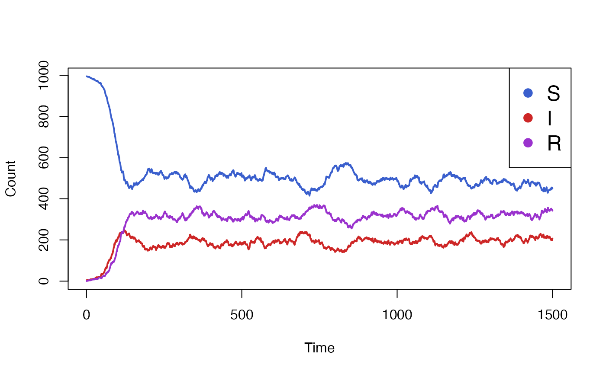
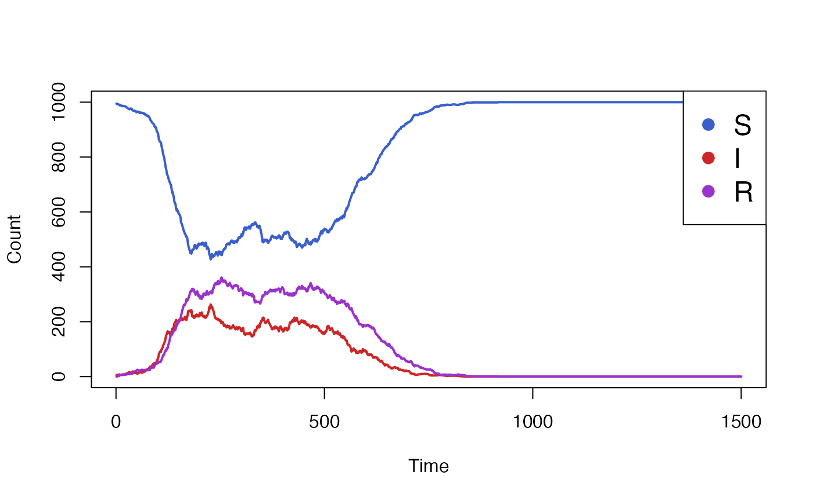
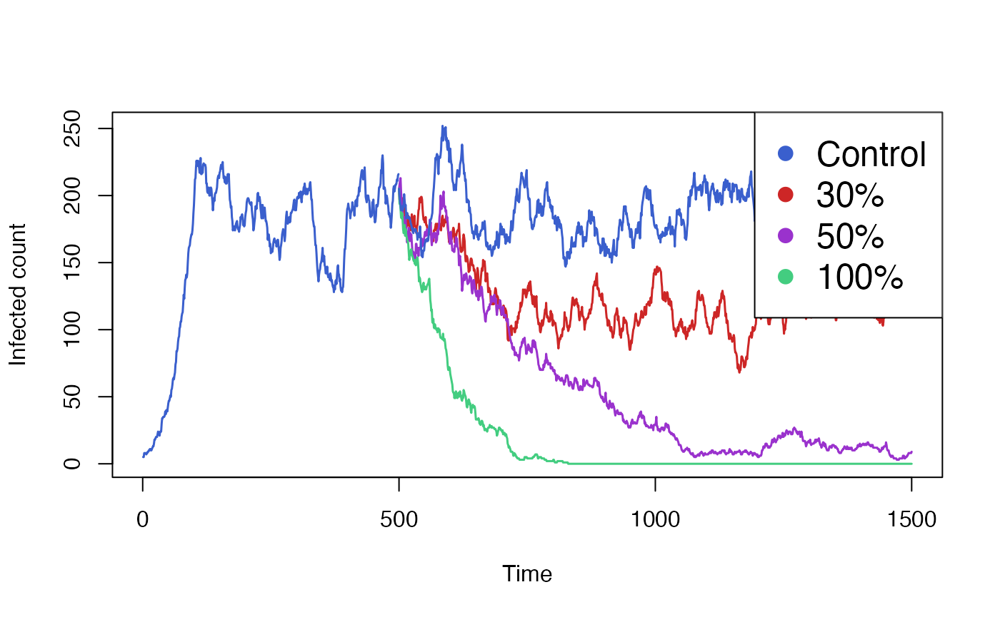
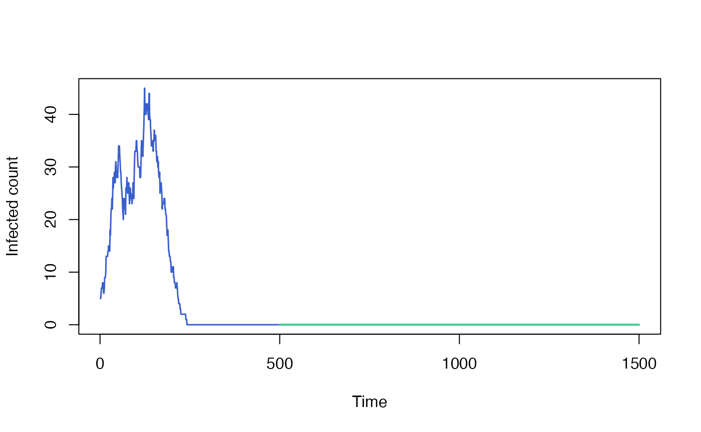

When modeling the impact of an intervention on a disease, it is common to have a first simulation phase where the intervention is disabled to achieve steady-state, followed by a second phase during which the intervention is applied. Often, we want to run the second phase many times over, varying the intervention parameters. Simulating the first phase every time is unnecessary and wasteful, since it isn’t affected by the intervention parameters.
Individual allows the user to run a simulation for a number of time steps, save the state of the simulation and resume it multiple times, with different parameters each time. This way, the initial phase before the intervention only needs to be simulated once.
The typical way to use this feature is to define a simulation
function which creates all the relevant simulation data and then calls
simulation_loop. The function we define takes in an
optional state parameter that is passed through to
simulation_loop.
run_simulation <- function(timesteps, state=NULL) {
health <- CategoricalVariable$new(c("S", "I"), rep("S", 10))
process <- bernoulli_process(health, "S", "I", 0.01)
simulation_loop(
variables=list(health),
processes=list(process),
timesteps=timesteps,
state=state)
}The simulation can be run a first time, for a given number of steps. It returns a state object, which captures the internal state of all variables and events, the state of the random number generator and the number of time steps that were simulated.
state <- run_simulation(timesteps = 50)Finally, the simulation is resumed with a larger number of time
steps, passing in the state object as an argument. The
timesteps argument refers to the total number of time
steps, including both the original simulation run and the new one. In
this case, run_simulation will only simulate 50 extra
steps. Before running the actual simulation,
simulation_loop will reload the simulation state from its
argument, overwriting any values we had set when initializing the
variables.
run_simulation(timesteps = 100, state=state)To demonstrate the checkpoint and restore functionality of individual in a practical setting, we will use a SIRS model with a vaccination intervention. Our aim is to compare the impact of the vaccination campaign, given different vaccine efficacy scenarios.
Individuals in the simulation move from being susceptible (S) to
infectious (I) to recovered (R) and back to susceptible, after their
natural immunity wanes off. Out of the entire population N,
only I0 individuals are initially infectios, and the rest
are susceptible. Orthogonally, an individual can either be vaccinated
(Y) or not (N). The vaccination and the immunity it confers never wanes
off. All individuals are initially unvaccinated.
make_variables <- function(N, I0) {
health_states_t0 <- rep("S",N)
health_states_t0[sample.int(n = N,size = I0)] <- "I"
health <- CategoricalVariable$new(categories = c("S","I","R"), initial_values = health_states_t0)
vaccinated <- CategoricalVariable$new(categories = c("Y", "N"), initial_values = rep("N", N))
list(health=health, vaccinated=vaccinated)
}A vaccinated individual has a reduced probability of becoming infectious, as determined by the vaccine’s efficacy. The function below creates the process to model infection. It samples from the susceptible compartments, applying the different rates depending on the whether an individual’s vaccinated status.
make_infection_process <- function(health, vaccinated, N, beta, vaccine_efficacy) {
function(t) {
I <- health$get_size_of("I")
foi <- beta * I / N
vaccinated_S <- health$get_index_of("S")$and(vaccinated$get_index_of("Y"))
non_vaccinated_S <- health$get_index_of("S")$and(vaccinated$get_index_of("N"))
vaccinated_S$sample(rate = foi * (1 - vaccine_efficacy))
non_vaccinated_S$sample(rate = foi)
health$queue_update(value = "I", index = vaccinated_S)
health$queue_update(value = "I", index = non_vaccinated_S)
}
}For a while at the start of the simulation no vaccination takes
place. Only after a number of time steps, determined by the
vaccination_start parameter, does the intervention begin.
Periodically, an event will fire and every individual has a fixed
probability of becoming vaccinated. If vaccination_start is
NULL, the intervention never begins.
make_vaccination_event <- function(vaccinated, vaccination_start, vaccination_interval, vaccination_rate) {
e <- Event$new()
e$add_listener(function(t) {
vaccinated$queue_update(value = "Y",
vaccinated$get_index_of("N")$sample(vaccination_rate))
e$schedule(vaccination_interval)
})
if (!is.null(vaccination_start)) {
e$schedule(vaccination_start - 1)
}
e
}We will define our simulation as a function, taking the simulation
parameters as arguments. Any additional arguments to the function, as
denoted by ..., will be passed on to
simulation_loop. This will allow us to pass the
state argument in. The function returns the simulation data
as well as the new saved state.
run_simulation <- function(
steps,
N = 1e3,
I0 = 5,
beta = 0.1, # S -> I
gamma = 0.05, # I -> R
xi = 0.03, # R -> S
vaccination_start = NULL,
vaccination_interval = 10,
vaccination_rate = 0.05, # N -> Y
vaccine_efficacy = 1,
...)
{
variables <- make_variables(N, I0)
infection_process <- make_infection_process(
variables$health,
variables$vaccinated,
N, beta, vaccine_efficacy)
recovery_process <- bernoulli_process(variables$health, "I", "R", gamma)
return_process <- bernoulli_process(variables$health, "R", "S", xi)
vaccination_event <- make_vaccination_event(
variables$vaccinated, vaccination_start, vaccination_interval, vaccination_rate)
renderer <- Render$new(timesteps = steps)
health_render_process <- categorical_count_renderer_process(
renderer = renderer,
variable = variables$health,
categories = variables$health$get_categories()
)
processes <- list(
infection_process,
recovery_process,
return_process,
health_render_process)
final_state <- simulation_loop(
variables = variables,
events = list(vaccination_event),
processes = processes,
timesteps = steps,
...)
list(result=renderer$to_dataframe(), state=final_state)
}We will start by running and plotting our baseline simulation, with the intervention disabled.
data <- run_simulation(steps=1500)$result
colours <- c("royalblue3","firebrick3","darkorchid3")
matplot(
x=data["timestep"],
y=data[c("S_count","I_count", "R_count")],
xlab="Time", ylab="Count",
type="l", lwd=2, lty = 1, col = colours
)
legend(
x = "topright",
pch = rep(16,3),
col = colours,
legend = c("S", "I", "R"), cex = 1.5,
bg='white'
)
We see that the simulation takes some time to settle from its initial
parameters to its steady-state conditions. We will now enable the
vaccine intervention, but only starting at a point after the simulation
has settled, for example at t=500.
data <- run_simulation(steps=1500, vaccination_start = 500, vaccine_efficacy = 1)$result
colours <- c("royalblue3","firebrick3","darkorchid3")
matplot(
x=data["timestep"],
y=data[c("S_count","I_count", "R_count")],
xlab="Time", ylab="Count",
type="l", lwd=2, lty = 1, col = colours
)
legend(
x = "topright",
pch = rep(16,3),
col = colours,
legend = c("S", "I", "R"), cex = 1.5,
bg='white'
)
The simulation above clearly shows the effect of the vaccination
campaign, starting at t=500. However, it made the
optimistic assumption of a 100% vaccine efficacy. We wish to run the
simulation again but with varying levels of efficacy, in order the
compare its impact.
While we could run the code above many times over, each simulation
would repeat the first 499 timesteps, despite the result being identical
each time. Instead we start by running only these timesteps, and saving
the result. We do need to specify the start of the intervention, as it
is necessary to schedule the first vaccination event. However the
details of the intervention (ie. vaccine_efficacy) are
irrelevant and can be omitted.
initial <- run_simulation(steps=499, vaccination_start = 500)From this initial result, we can resume the simulation, but using different values of vaccine efficacy each time. We also include a control simulation, in which no vaccination takes place. Each of these simulation will skip the first 499 steps and only run the next 1001 time steps.
control <- run_simulation(steps=1500, vaccination_start = 500, vaccine_efficacy=0.0, state=initial$state)
vaccine30 <- run_simulation(steps=1500, vaccination_start = 500, vaccine_efficacy=0.3, state=initial$state)
vaccine50 <- run_simulation(steps=1500, vaccination_start = 500, vaccine_efficacy=0.5, state=initial$state)
vaccine100 <- run_simulation(steps=1500, vaccination_start = 500, vaccine_efficacy=1.0, state=initial$state)Finally we aggregate and plot the results from all these simulations. We also need to include the data from our initial run, which we will plot the same colour as our control simulation.
colours <- c("royalblue3","firebrick3","darkorchid3", "seagreen3")
# Pad initial out to ensure it has the same shape as other series.
initial$result[500:1500,] <- NA
matplot(
data.frame(
initial$result[,"I_count"],
vaccine30$result[,"I_count"],
vaccine50$result[,"I_count"],
vaccine100$result[,"I_count"],
control$result[,"I_count"]),
xlab = "Time", ylab = "Infected count",
type = "l", lwd = 1.5, lty = 1, col = colours,
)
legend(
x = "topright", pch = rep(16,3),
col = colours,
legend = c("Control", "30%", "50%", "100%"), cex = 1.5,
bg='white'
)
Saving and restoring the simulation state comes with a number of caveats.
CategoricalVariable cannot be
modified, etc. The order of variables and events passed to the
run_simulation function must remain stable.vaccination_start; changing that parameter would have no
effect.While parameters of the simulation can be changed between the initial
run and the subsequent runs (as demonstrated with the
vaccine_efficacy parameter above), in general you should
not modify parameters that would have been already had an impact on the
first part of the simulation. Doing so would produce results that can
only be produced through checkpoint and resume, and not as a single
simulation.
For example, in our SIRS model, it may be tempting to model a time-varying parameter by running half of the simulation with one value and then resuming it with a different value. While this would probably work, it would be brittle and hard to compose. As more time-varying parameters are introduced to the model, the simulation would need to be saved and restored each time a value changes.
By default resuming a simulation does not restore R’s random number generator’s state. Every resumed run from the same saved state will be independent and, if the model is stochastic, will produce different results.
We can demonstrate that by running the baseline of our SIRS model multiple times and plotting the results. All three runs start off from the same state, inherited from our original model run, but quickly diverge based on the outcome of random draws.
initial <- run_simulation(steps=499)
run1 <- run_simulation(steps = 1500, state = initial$state)
run2 <- run_simulation(steps = 1500, state = initial$state)
run3 <- run_simulation(steps = 1500, state = initial$state)
initial$result[500:1500,] <- NA
matplot(
data.frame(
initial$result[,"I_count"],
run1$result[,"I_count"],
run2$result[,"I_count"],
run3$result[,"I_count"]),
xlab = "Time", ylab = "Infected count",
type = "l", lwd = 1.5, lty = 1, col = colours
)
Sometimes this behaviour may not be desirable, and we would instead like to restore the state of the random number generator exactly where it was when we stopped the first part of the run. One example of this is when checking that our model behaves the same whether or not it was saved and resumed.
The code below show an attempt at running the model twice, once as a continous run and once in a piecewise manner. We would hope that seeding the random generator at the start of the simulation would be enough to get identical results out of it. Unfortunately we don’t, because the random number generator state’s at the intermediate point isn’t being preserved.
set.seed(123)
uninterrupted_run <- run_simulation(steps = 1500)$result
set.seed(123)
piecewise_run_initial <- run_simulation(steps = 499)
piecewise_run_final <- run_simulation(steps = 1500, state = piecewise_run_initial$state)
piecewise_run <- rbind(piecewise_run_initial$result, piecewise_run_final$result[500:1500,])
all.equal(uninterrupted_run, piecewise_run)
#> [1] "Component \"S_count\": Mean relative difference: 0.02780224"
#> [2] "Component \"I_count\": Mean relative difference: 0.127305"
#> [3] "Component \"R_count\": Mean relative difference: 0.1365375"We can try the same again, but this time set
restore_random_state = TRUE to enable restoring the
simulation state. This time we’ve successfully managed to reproduce the
data from our uninterrupted run.
set.seed(123)
piecewise_run_initial <- run_simulation(steps = 499)
piecewise_run_final <- run_simulation(steps = 1500, state = piecewise_run_initial$state, restore_random_state = TRUE)
piecewise_run <- rbind(piecewise_run_initial$result, piecewise_run_final$result[500:1500,])
all.equal(uninterrupted_run, piecewise_run)
#> [1] "Component \"S_count\": Mean relative difference: 0.4792393"
#> [2] "Component \"I_count\": Mean relative difference: 13.31196"
#> [3] "Component \"R_count\": Mean relative difference: 8.608969"Using restore_random_state = TRUE resets the global
random number generator’s state, which could have surprising and
undesirable side effects. It is generally useful in tests, but should be
used carefully elsewhere.
for (i in 1:50) {
set.seed(123)
set.seed(123)
x <- run_simulation(steps=i)$state$variables
set.seed(123)
y <- run_simulation(steps=i)$state$variables
if (!isTRUE(all.equal(x, y))) {
print(i)
print(x)
print(y)
break
}
}
#> [1] 12
#> $health
#> $health$S
#> [1] 1 2 3 4 5 6 7 8 9 10 11 12 13 14 15
#> [16] 16 17 18 19 20 21 22 23 24 25 26 27 28 29 30
#> [31] 31 32 33 34 35 36 37 38 39 40 41 42 43 44 45
#> [46] 46 47 48 49 50 51 52 53 54 55 56 57 58 59 60
#> [61] 61 62 63 64 65 66 67 68 69 70 71 72 73 74 75
#> [76] 76 77 78 79 80 81 82 83 84 85 86 87 89 90 91
#> [91] 92 93 95 96 97 98 99 100 101 102 103 104 105 106 107
#> [106] 108 109 110 111 112 113 114 115 116 117 118 119 120 121 122
#> [121] 123 124 125 126 127 128 129 130 131 132 133 134 135 136 137
#> [136] 138 139 140 141 142 143 144 145 146 147 148 149 150 151 152
#> [151] 153 154 155 156 157 158 159 160 161 162 163 164 165 166 167
#> [166] 168 169 170 171 172 173 174 175 176 177 178 180 181 182 183
#> [181] 184 185 186 187 188 189 190 191 192 193 194 196 197 198 199
#> [196] 200 201 202 203 204 205 206 207 208 209 210 211 212 213 214
#> [211] 215 216 217 218 219 220 221 222 223 224 225 226 227 228 229
#> [226] 230 231 232 233 234 235 236 237 238 239 240 241 242 243 244
#> [241] 245 246 247 248 249 250 251 252 253 254 255 256 257 258 259
#> [256] 260 261 262 263 264 265 266 267 268 269 270 271 272 273 274
#> [271] 275 276 277 278 279 280 281 282 283 284 285 286 287 288 289
#> [286] 290 291 292 293 294 295 296 297 298 299 300 301 302 303 304
#> [301] 305 306 307 308 309 310 311 312 313 314 315 316 317 318 319
#> [316] 320 321 322 323 324 325 326 327 328 329 330 331 332 333 334
#> [331] 335 336 337 338 339 340 341 342 343 344 345 346 347 348 349
#> [346] 350 351 352 353 354 355 356 357 358 359 360 361 362 363 364
#> [361] 365 366 367 368 369 370 371 372 373 374 375 376 377 378 379
#> [376] 380 381 382 383 384 385 386 387 388 389 390 391 392 393 394
#> [391] 395 396 397 398 399 400 401 402 403 404 405 406 407 408 409
#> [406] 410 411 412 413 414 416 417 418 419 420 421 422 423 424 425
#> [421] 426 427 428 429 430 431 432 433 434 435 436 437 438 439 440
#> [436] 441 442 443 444 445 446 447 448 449 450 451 452 453 454 455
#> [451] 456 457 458 459 460 461 462 464 465 466 467 468 469 470 471
#> [466] 472 473 474 475 476 477 478 479 480 481 482 483 484 485 486
#> [481] 487 488 489 490 491 492 493 494 495 496 497 498 499 500 501
#> [496] 502 503 504 505 506 507 508 509 510 511 512 513 514 515 516
#> [511] 517 518 519 520 521 522 523 524 525 527 528 529 530 531 532
#> [526] 533 534 535 536 537 538 539 540 541 542 543 544 545 546 547
#> [541] 548 549 550 551 552 553 554 555 556 557 558 559 560 561 562
#> [556] 563 564 565 566 567 568 569 570 571 572 573 574 575 576 577
#> [571] 578 579 580 581 582 583 584 585 586 587 588 589 590 591 592
#> [586] 593 594 595 596 597 598 599 600 601 602 603 604 605 606 607
#> [601] 608 609 610 611 612 613 614 615 616 617 618 619 620 621 622
#> [616] 623 624 625 626 627 628 629 630 631 632 633 634 635 636 637
#> [631] 638 639 640 641 642 643 644 645 646 647 648 649 650 651 652
#> [646] 653 654 655 656 657 658 659 660 661 662 663 664 665 666 667
#> [661] 668 669 670 671 672 673 674 675 676 677 678 679 680 681 682
#> [676] 683 684 685 686 687 688 689 690 691 692 693 694 695 696 697
#> [691] 698 699 700 701 702 703 704 705 706 707 708 709 710 711 712
#> [706] 713 714 715 716 717 718 719 720 721 722 723 724 725 726 727
#> [721] 728 729 730 731 732 733 734 735 736 737 738 739 740 741 742
#> [736] 743 744 745 746 747 748 749 750 751 752 753 754 755 756 757
#> [751] 758 759 760 761 762 763 764 765 766 767 768 769 770 771 772
#> [766] 773 774 775 776 777 778 779 780 781 782 783 784 785 786 787
#> [781] 788 789 790 791 792 793 794 795 796 797 798 799 800 801 802
#> [796] 803 804 805 806 807 808 809 810 811 812 813 814 815 816 817
#> [811] 818 820 821 822 823 824 825 826 827 828 829 830 831 832 833
#> [826] 834 835 836 837 838 839 840 841 842 843 844 845 846 847 848
#> [841] 849 850 851 852 853 854 855 856 857 858 859 860 861 862 863
#> [856] 864 865 866 867 868 869 870 871 872 873 874 875 876 877 878
#> [871] 879 880 881 882 883 884 885 886 887 888 889 890 891 892 893
#> [886] 894 895 896 897 898 899 900 901 902 903 904 905 906 907 908
#> [901] 909 910 911 912 913 914 915 916 917 918 919 920 921 922 923
#> [916] 924 925 926 927 928 929 930 931 932 933 934 935 936 937 938
#> [931] 939 940 941 942 943 944 945 946 947 948 949 950 951 952 953
#> [946] 954 955 956 957 958 959 960 961 962 963 964 965 966 967 968
#> [961] 969 970 971 972 973 974 975 976 977 978 979 980 981 982 983
#> [976] 984 985 986 987 988 989 990 991 992 993 994 995 996 997 998
#> [991] 999 1000
#>
#> $health$I
#> [1] 88 94 179 415 463 819
#>
#> $health$R
#> [1] 195 526
#>
#>
#> $vaccinated
#> $vaccinated$Y
#> [1] 18 21 29 41 47 50 68 69 72 73 83 89 92 95 97 105 106 114 124
#> [20] 138 141 144 154 185 190 192 210 212 217 230 236 241 257 259 262 274 285 289
#> [39] 303 306 308 325 329 331 333 359 362 373 374 421 430 447 456 487 501 539 542
#> [58] 577 607 610 619 620 645 674 677 722 743 745 771 775 787 790 810 818 831 833
#> [77] 842 854 856 863 872 876 879 881 888 895 915 922 923 934 951 955 956 974 980
#> [96] 982
#>
#> $vaccinated$N
#> [1] 1 2 3 4 5 6 7 8 9 10 11 12 13 14 15
#> [16] 16 17 19 20 22 23 24 25 26 27 28 30 31 32 33
#> [31] 34 35 36 37 38 39 40 42 43 44 45 46 48 49 51
#> [46] 52 53 54 55 56 57 58 59 60 61 62 63 64 65 66
#> [61] 67 70 71 74 75 76 77 78 79 80 81 82 84 85 86
#> [76] 87 88 90 91 93 94 96 98 99 100 101 102 103 104 107
#> [91] 108 109 110 111 112 113 115 116 117 118 119 120 121 122 123
#> [106] 125 126 127 128 129 130 131 132 133 134 135 136 137 139 140
#> [121] 142 143 145 146 147 148 149 150 151 152 153 155 156 157 158
#> [136] 159 160 161 162 163 164 165 166 167 168 169 170 171 172 173
#> [151] 174 175 176 177 178 179 180 181 182 183 184 186 187 188 189
#> [166] 191 193 194 195 196 197 198 199 200 201 202 203 204 205 206
#> [181] 207 208 209 211 213 214 215 216 218 219 220 221 222 223 224
#> [196] 225 226 227 228 229 231 232 233 234 235 237 238 239 240 242
#> [211] 243 244 245 246 247 248 249 250 251 252 253 254 255 256 258
#> [226] 260 261 263 264 265 266 267 268 269 270 271 272 273 275 276
#> [241] 277 278 279 280 281 282 283 284 286 287 288 290 291 292 293
#> [256] 294 295 296 297 298 299 300 301 302 304 305 307 309 310 311
#> [271] 312 313 314 315 316 317 318 319 320 321 322 323 324 326 327
#> [286] 328 330 332 334 335 336 337 338 339 340 341 342 343 344 345
#> [301] 346 347 348 349 350 351 352 353 354 355 356 357 358 360 361
#> [316] 363 364 365 366 367 368 369 370 371 372 375 376 377 378 379
#> [331] 380 381 382 383 384 385 386 387 388 389 390 391 392 393 394
#> [346] 395 396 397 398 399 400 401 402 403 404 405 406 407 408 409
#> [361] 410 411 412 413 414 415 416 417 418 419 420 422 423 424 425
#> [376] 426 427 428 429 431 432 433 434 435 436 437 438 439 440 441
#> [391] 442 443 444 445 446 448 449 450 451 452 453 454 455 457 458
#> [406] 459 460 461 462 463 464 465 466 467 468 469 470 471 472 473
#> [421] 474 475 476 477 478 479 480 481 482 483 484 485 486 488 489
#> [436] 490 491 492 493 494 495 496 497 498 499 500 502 503 504 505
#> [451] 506 507 508 509 510 511 512 513 514 515 516 517 518 519 520
#> [466] 521 522 523 524 525 526 527 528 529 530 531 532 533 534 535
#> [481] 536 537 538 540 541 543 544 545 546 547 548 549 550 551 552
#> [496] 553 554 555 556 557 558 559 560 561 562 563 564 565 566 567
#> [511] 568 569 570 571 572 573 574 575 576 578 579 580 581 582 583
#> [526] 584 585 586 587 588 589 590 591 592 593 594 595 596 597 598
#> [541] 599 600 601 602 603 604 605 606 608 609 611 612 613 614 615
#> [556] 616 617 618 621 622 623 624 625 626 627 628 629 630 631 632
#> [571] 633 634 635 636 637 638 639 640 641 642 643 644 646 647 648
#> [586] 649 650 651 652 653 654 655 656 657 658 659 660 661 662 663
#> [601] 664 665 666 667 668 669 670 671 672 673 675 676 678 679 680
#> [616] 681 682 683 684 685 686 687 688 689 690 691 692 693 694 695
#> [631] 696 697 698 699 700 701 702 703 704 705 706 707 708 709 710
#> [646] 711 712 713 714 715 716 717 718 719 720 721 723 724 725 726
#> [661] 727 728 729 730 731 732 733 734 735 736 737 738 739 740 741
#> [676] 742 744 746 747 748 749 750 751 752 753 754 755 756 757 758
#> [691] 759 760 761 762 763 764 765 766 767 768 769 770 772 773 774
#> [706] 776 777 778 779 780 781 782 783 784 785 786 788 789 791 792
#> [721] 793 794 795 796 797 798 799 800 801 802 803 804 805 806 807
#> [736] 808 809 811 812 813 814 815 816 817 819 820 821 822 823 824
#> [751] 825 826 827 828 829 830 832 834 835 836 837 838 839 840 841
#> [766] 843 844 845 846 847 848 849 850 851 852 853 855 857 858 859
#> [781] 860 861 862 864 865 866 867 868 869 870 871 873 874 875 877
#> [796] 878 880 882 883 884 885 886 887 889 890 891 892 893 894 896
#> [811] 897 898 899 900 901 902 903 904 905 906 907 908 909 910 911
#> [826] 912 913 914 916 917 918 919 920 921 924 925 926 927 928 929
#> [841] 930 931 932 933 935 936 937 938 939 940 941 942 943 944 945
#> [856] 946 947 948 949 950 952 953 954 957 958 959 960 961 962 963
#> [871] 964 965 966 967 968 969 970 971 972 973 975 976 977 978 979
#> [886] 981 983 984 985 986 987 988 989 990 991 992 993 994 995 996
#> [901] 997 998 999 1000
#>
#>
#> $health
#> $health$S
#> [1] 1 2 3 4 5 6 7 8 9 10 11 12 13 14 15
#> [16] 16 17 18 19 20 21 22 23 24 25 26 27 28 29 30
#> [31] 31 32 33 34 35 36 37 38 39 40 41 42 43 44 45
#> [46] 46 47 48 49 50 51 52 53 54 55 56 57 58 59 60
#> [61] 61 62 63 64 65 66 67 68 69 70 71 72 73 74 75
#> [76] 76 77 78 79 80 81 82 83 84 85 86 87 88 89 90
#> [91] 91 92 93 94 95 96 97 98 99 100 101 102 103 104 105
#> [106] 106 107 108 109 110 111 112 113 114 115 116 117 118 119 120
#> [121] 121 122 123 124 125 126 127 128 129 130 131 132 133 134 135
#> [136] 136 137 138 139 140 141 142 143 144 145 146 147 148 149 150
#> [151] 151 152 153 154 155 156 157 158 159 160 161 162 163 164 165
#> [166] 166 167 168 169 170 171 172 173 174 175 176 177 178 180 181
#> [181] 182 183 184 185 186 187 188 190 191 192 193 194 196 197 198
#> [196] 199 200 201 202 203 204 205 206 207 208 209 210 211 212 213
#> [211] 214 215 216 217 218 219 220 221 222 223 224 225 226 227 228
#> [226] 229 230 231 232 234 235 236 237 238 239 240 241 242 243 244
#> [241] 245 246 247 248 249 250 251 252 253 254 255 256 257 258 259
#> [256] 260 261 262 263 264 265 266 267 268 269 270 271 272 273 274
#> [271] 275 276 277 278 279 280 281 282 283 284 285 286 287 288 289
#> [286] 290 291 292 293 294 295 296 297 298 299 300 301 302 303 304
#> [301] 305 306 307 308 309 311 312 313 314 315 316 317 318 319 320
#> [316] 321 322 323 324 325 326 327 328 329 330 331 332 333 334 335
#> [331] 336 337 338 339 340 341 342 343 344 345 346 347 348 349 350
#> [346] 351 352 353 354 355 356 357 358 359 360 361 362 363 364 365
#> [361] 366 367 368 369 370 371 372 373 374 375 376 377 378 379 380
#> [376] 381 382 383 384 386 387 388 389 390 391 392 393 394 395 396
#> [391] 397 398 399 400 401 402 403 404 405 406 407 408 409 410 411
#> [406] 412 413 414 416 417 418 419 420 421 422 423 424 425 426 427
#> [421] 428 429 430 431 432 433 434 435 436 437 438 439 440 441 442
#> [436] 443 444 445 446 447 448 449 450 451 452 453 454 455 456 457
#> [451] 458 459 460 461 462 464 465 466 467 468 469 470 471 472 473
#> [466] 474 475 476 477 478 479 480 481 482 483 484 485 486 487 488
#> [481] 489 490 491 492 493 494 495 496 497 498 499 500 501 502 503
#> [496] 504 505 506 507 508 509 510 511 512 513 514 515 516 517 518
#> [511] 519 520 521 522 523 524 525 527 528 529 530 531 532 533 534
#> [526] 535 536 537 538 539 540 541 542 543 544 545 546 547 548 549
#> [541] 550 551 552 553 554 555 556 557 558 559 560 561 562 563 564
#> [556] 565 566 567 568 569 571 572 573 574 575 576 577 578 579 580
#> [571] 581 582 583 584 585 586 587 588 589 590 591 592 593 594 595
#> [586] 596 597 598 599 600 601 602 603 604 605 606 607 608 609 610
#> [601] 611 612 613 614 615 616 617 618 619 620 621 622 623 624 625
#> [616] 626 627 628 629 630 631 632 633 634 635 636 637 638 639 640
#> [631] 641 642 643 644 645 646 647 648 649 650 651 652 653 654 655
#> [646] 656 657 658 659 660 661 662 664 665 667 668 669 670 671 672
#> [661] 673 674 675 676 677 678 679 680 681 682 683 684 685 686 687
#> [676] 688 689 690 691 692 693 694 695 696 697 698 699 700 701 702
#> [691] 703 704 705 706 707 708 709 710 711 712 713 714 715 716 717
#> [706] 718 719 720 721 722 723 724 725 726 727 728 729 730 731 732
#> [721] 733 734 735 736 737 738 739 740 741 742 743 744 745 746 747
#> [736] 748 749 750 751 752 753 754 755 756 757 758 759 760 761 762
#> [751] 763 764 765 766 767 768 769 770 771 772 773 774 775 776 777
#> [766] 778 779 780 781 782 783 784 785 786 787 788 789 790 791 792
#> [781] 793 794 795 796 797 798 799 800 801 802 803 804 805 806 807
#> [796] 808 809 810 811 812 813 814 815 816 817 818 819 820 821 822
#> [811] 823 824 825 826 827 828 829 830 831 832 833 834 835 836 837
#> [826] 838 839 840 841 842 843 844 845 846 847 848 849 850 851 852
#> [841] 853 854 855 856 857 858 859 860 861 862 863 864 865 866 867
#> [856] 868 869 870 871 872 873 874 875 876 877 878 879 880 881 882
#> [871] 883 884 885 886 887 888 889 890 891 892 893 894 895 896 897
#> [886] 898 899 900 901 902 903 904 905 906 907 908 909 910 911 912
#> [901] 913 914 915 916 917 918 919 920 921 922 923 924 925 926 927
#> [916] 928 929 930 931 932 933 934 935 936 937 938 939 940 941 942
#> [931] 943 944 945 946 947 948 949 950 951 952 953 954 955 956 957
#> [946] 958 959 960 961 962 963 964 965 966 967 968 969 970 971 972
#> [961] 973 974 975 976 977 978 979 980 981 982 983 984 985 986 987
#> [976] 988 989 990 991 992 993 994 995 996 997 998 999 1000
#>
#> $health$I
#> [1] 189 233 385 463 526 570 663 666
#>
#> $health$R
#> [1] 179 195 310 415
#>
#>
#> $vaccinated
#> $vaccinated$Y
#> numeric(0)
#>
#> $vaccinated$N
#> [1] 1 2 3 4 5 6 7 8 9 10 11 12 13 14
#> [15] 15 16 17 18 19 20 21 22 23 24 25 26 27 28
#> [29] 29 30 31 32 33 34 35 36 37 38 39 40 41 42
#> [43] 43 44 45 46 47 48 49 50 51 52 53 54 55 56
#> [57] 57 58 59 60 61 62 63 64 65 66 67 68 69 70
#> [71] 71 72 73 74 75 76 77 78 79 80 81 82 83 84
#> [85] 85 86 87 88 89 90 91 92 93 94 95 96 97 98
#> [99] 99 100 101 102 103 104 105 106 107 108 109 110 111 112
#> [113] 113 114 115 116 117 118 119 120 121 122 123 124 125 126
#> [127] 127 128 129 130 131 132 133 134 135 136 137 138 139 140
#> [141] 141 142 143 144 145 146 147 148 149 150 151 152 153 154
#> [155] 155 156 157 158 159 160 161 162 163 164 165 166 167 168
#> [169] 169 170 171 172 173 174 175 176 177 178 179 180 181 182
#> [183] 183 184 185 186 187 188 189 190 191 192 193 194 195 196
#> [197] 197 198 199 200 201 202 203 204 205 206 207 208 209 210
#> [211] 211 212 213 214 215 216 217 218 219 220 221 222 223 224
#> [225] 225 226 227 228 229 230 231 232 233 234 235 236 237 238
#> [239] 239 240 241 242 243 244 245 246 247 248 249 250 251 252
#> [253] 253 254 255 256 257 258 259 260 261 262 263 264 265 266
#> [267] 267 268 269 270 271 272 273 274 275 276 277 278 279 280
#> [281] 281 282 283 284 285 286 287 288 289 290 291 292 293 294
#> [295] 295 296 297 298 299 300 301 302 303 304 305 306 307 308
#> [309] 309 310 311 312 313 314 315 316 317 318 319 320 321 322
#> [323] 323 324 325 326 327 328 329 330 331 332 333 334 335 336
#> [337] 337 338 339 340 341 342 343 344 345 346 347 348 349 350
#> [351] 351 352 353 354 355 356 357 358 359 360 361 362 363 364
#> [365] 365 366 367 368 369 370 371 372 373 374 375 376 377 378
#> [379] 379 380 381 382 383 384 385 386 387 388 389 390 391 392
#> [393] 393 394 395 396 397 398 399 400 401 402 403 404 405 406
#> [407] 407 408 409 410 411 412 413 414 415 416 417 418 419 420
#> [421] 421 422 423 424 425 426 427 428 429 430 431 432 433 434
#> [435] 435 436 437 438 439 440 441 442 443 444 445 446 447 448
#> [449] 449 450 451 452 453 454 455 456 457 458 459 460 461 462
#> [463] 463 464 465 466 467 468 469 470 471 472 473 474 475 476
#> [477] 477 478 479 480 481 482 483 484 485 486 487 488 489 490
#> [491] 491 492 493 494 495 496 497 498 499 500 501 502 503 504
#> [505] 505 506 507 508 509 510 511 512 513 514 515 516 517 518
#> [519] 519 520 521 522 523 524 525 526 527 528 529 530 531 532
#> [533] 533 534 535 536 537 538 539 540 541 542 543 544 545 546
#> [547] 547 548 549 550 551 552 553 554 555 556 557 558 559 560
#> [561] 561 562 563 564 565 566 567 568 569 570 571 572 573 574
#> [575] 575 576 577 578 579 580 581 582 583 584 585 586 587 588
#> [589] 589 590 591 592 593 594 595 596 597 598 599 600 601 602
#> [603] 603 604 605 606 607 608 609 610 611 612 613 614 615 616
#> [617] 617 618 619 620 621 622 623 624 625 626 627 628 629 630
#> [631] 631 632 633 634 635 636 637 638 639 640 641 642 643 644
#> [645] 645 646 647 648 649 650 651 652 653 654 655 656 657 658
#> [659] 659 660 661 662 663 664 665 666 667 668 669 670 671 672
#> [673] 673 674 675 676 677 678 679 680 681 682 683 684 685 686
#> [687] 687 688 689 690 691 692 693 694 695 696 697 698 699 700
#> [701] 701 702 703 704 705 706 707 708 709 710 711 712 713 714
#> [715] 715 716 717 718 719 720 721 722 723 724 725 726 727 728
#> [729] 729 730 731 732 733 734 735 736 737 738 739 740 741 742
#> [743] 743 744 745 746 747 748 749 750 751 752 753 754 755 756
#> [757] 757 758 759 760 761 762 763 764 765 766 767 768 769 770
#> [771] 771 772 773 774 775 776 777 778 779 780 781 782 783 784
#> [785] 785 786 787 788 789 790 791 792 793 794 795 796 797 798
#> [799] 799 800 801 802 803 804 805 806 807 808 809 810 811 812
#> [813] 813 814 815 816 817 818 819 820 821 822 823 824 825 826
#> [827] 827 828 829 830 831 832 833 834 835 836 837 838 839 840
#> [841] 841 842 843 844 845 846 847 848 849 850 851 852 853 854
#> [855] 855 856 857 858 859 860 861 862 863 864 865 866 867 868
#> [869] 869 870 871 872 873 874 875 876 877 878 879 880 881 882
#> [883] 883 884 885 886 887 888 889 890 891 892 893 894 895 896
#> [897] 897 898 899 900 901 902 903 904 905 906 907 908 909 910
#> [911] 911 912 913 914 915 916 917 918 919 920 921 922 923 924
#> [925] 925 926 927 928 929 930 931 932 933 934 935 936 937 938
#> [939] 939 940 941 942 943 944 945 946 947 948 949 950 951 952
#> [953] 953 954 955 956 957 958 959 960 961 962 963 964 965 966
#> [967] 967 968 969 970 971 972 973 974 975 976 977 978 979 980
#> [981] 981 982 983 984 985 986 987 988 989 990 991 992 993 994
#> [995] 995 996 997 998 999 1000